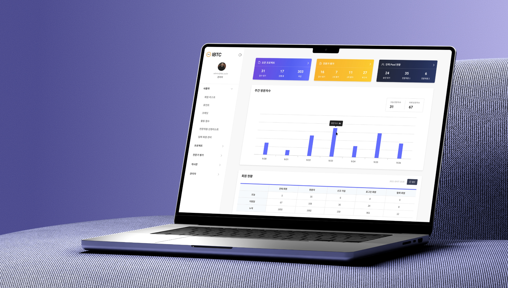
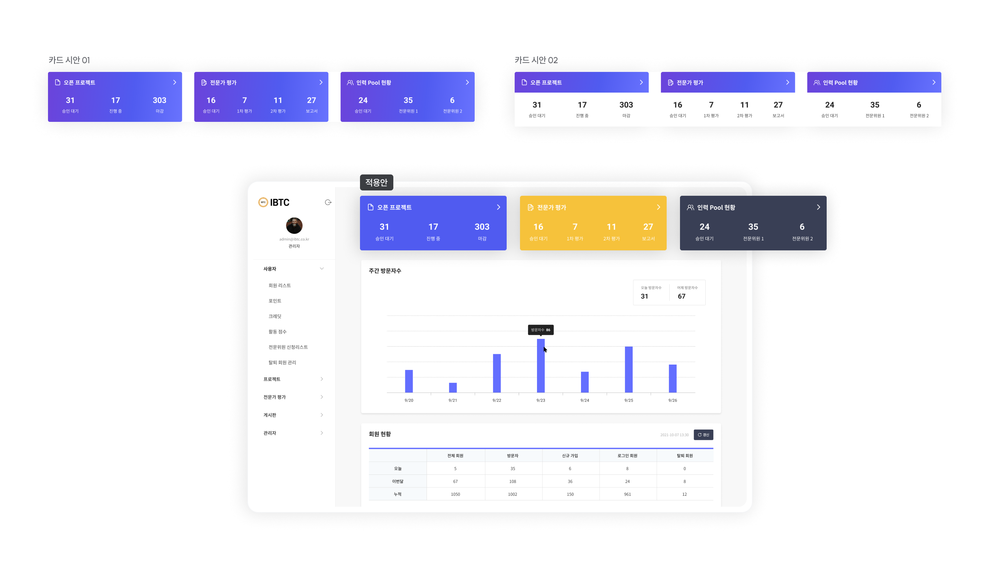
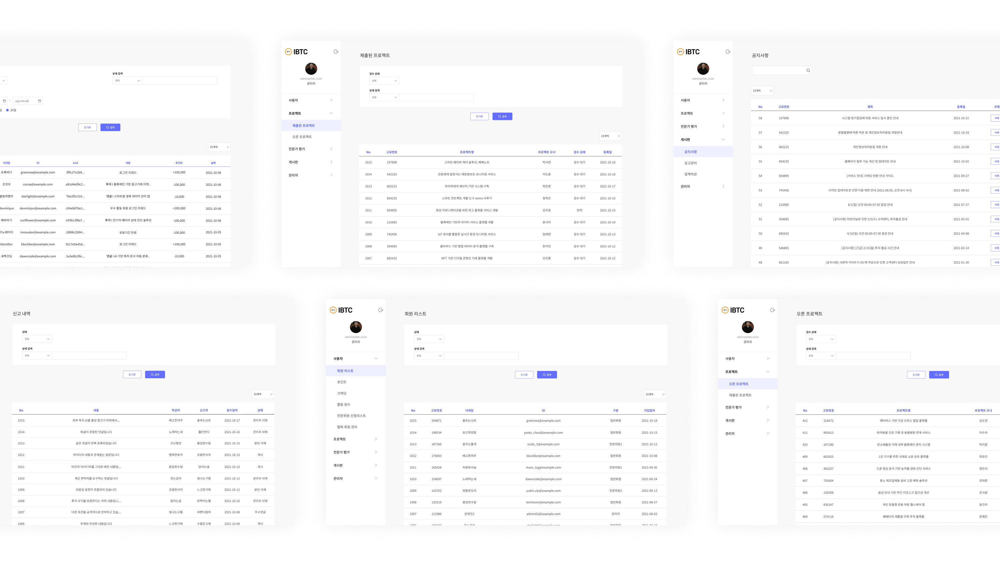
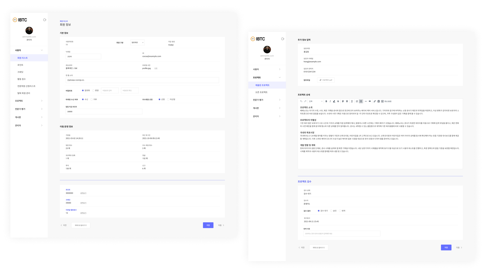
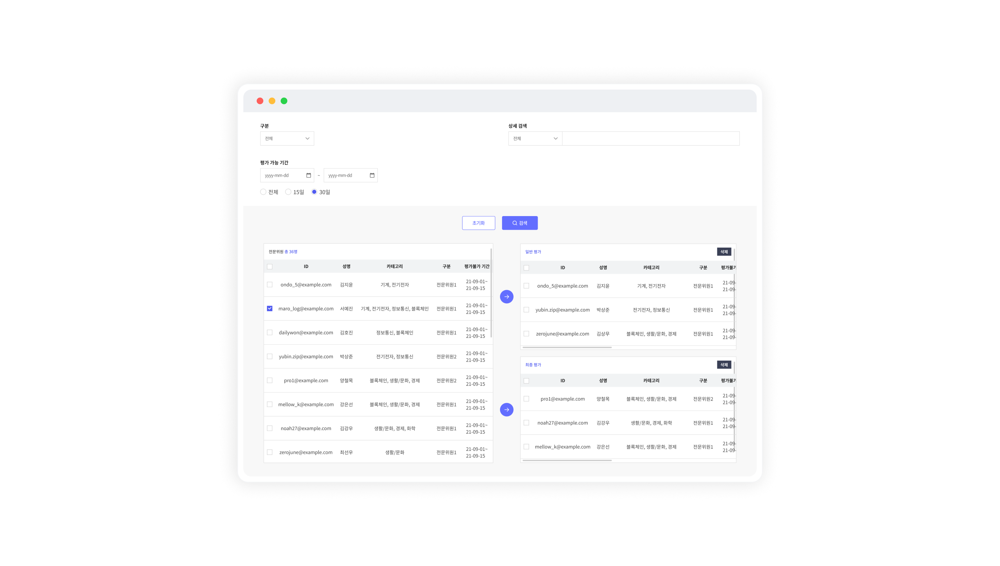

( overview )
프로젝트 후반에 합류해 한 달 안에 관리자 페이지의 디자인과 퍼블리싱을 마무리했습니다.
유저 페이지의 컬러 스케일과 컴포넌트, 마크업 구조를 재사용해 같은 기준으로 관리자 화면을 구성했습니다.

( 01 )
자주 보는 현황을 첫 화면에 모은 대시보드
전체 메뉴를 한눈에 파악하고 이동할 수 있도록 사이드바 형식으로 레이아웃을 잡았습니다.
프로젝트와 평가 진행 상태처럼 자주 확인하는 정보는 상단에 요약하여 하위 메뉴로 들어가지 않아도 현황을 볼 수 있게 했습니다.

확인하려는 현황을 색으로 바로 구분할 수 있도록, 유저 페이지의 포인트 컬러 3가지를 카드마다 나눠 적용했습니다.
( 02 )
검색·조회·관리 위치를 통일한 리스트 화면
검색 조건과 조회 결과를 한 흐름으로 확인할 수 있도록 상단 검색 영역과 결과 테이블로 구성했습니다.
반복되는 리스트 화면은 검색·조회·관리 기능의 위치를 통일하여 같은 방식으로 사용할 수 있도록 했습니다.

( 03 )
정보 성격에 따라 영역을 나눈 상세·배정 화면
정보의 성격과 수정 여부에 따라 영역을 나누어 배치했습니다.
수정할 수 없는 정보는 입력 요소와 시각적으로 구분해 상태를 바로 확인할 수 있도록 했습니다.


항목을 선택하거나 연결해야 하는 경우에는 대상 정보를 비교하면서 작업할 수 있도록 구성했습니다.